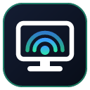

Arena PC Bridge
Einrichtung in 3 Minuten – Windows, Opera (Chromium)
1 · Starter starten (auf Windows)
Projektordner öffnen → installer\install.cmd anklicken. Danach liegt auf dem
Desktop die Verknüpfung „Arena PC Bridge“. Doppelklicken – es öffnet sich ein
schwarzes Fenster (darf offen bleiben) und ein Browser-Tab mit dieser Seite.
http://127.0.0.1:8765
Noch nicht getestet.
2 · Extension in Opera laden
Opera öffnen → Adresszeile opera://extensions → oben rechts
Entwicklermodus einschalten → Entpackte Erweiterung laden → den Ordner
extension\ auswählen. Das Puzzle-Symbol neben der Adresszeile anklicken und
„Arena PC Bridge“ anpinnen.
3 · Auf arena.ai einschalten
arena.ai neu laden. Unter der Chat-Eingabe erscheint die Leiste „Arena PC Bridge: AUS/AN“. Auf AN stellen – fertig. Zusätzlich kannst du in den Extension-Einstellungen (Icon anklicken) festlegen, ob Arena Dateien lesen, schreiben und Befehle ausführen darf.
Funktioniert nicht?
- Kein Schalter unter der Eingabe? Tab mit F12 öffnen und nach
arena-pc-bridgefiltern ODERwindow.ArenaLocalToolsin die Konsole tippen. - Nicht verbunden? Läuft das Starter-Fenster noch? Diesen Seiten-Tab erneut öffnen und „Jetzt erlauben“ klicken.
- Port 8765 belegt? Im Fenster der Extension den Port ändern, den Starter mit
start.cmd -Port 8899neu starten. - Befehle werden abgelehnt? In der Extension „Befehle ausführen“ aktivieren und den Starter neu starten.
- Nur
127.0.0.1: Es verlässt nichts den PC, es kommen nur Anfragen von deinem Browser an.